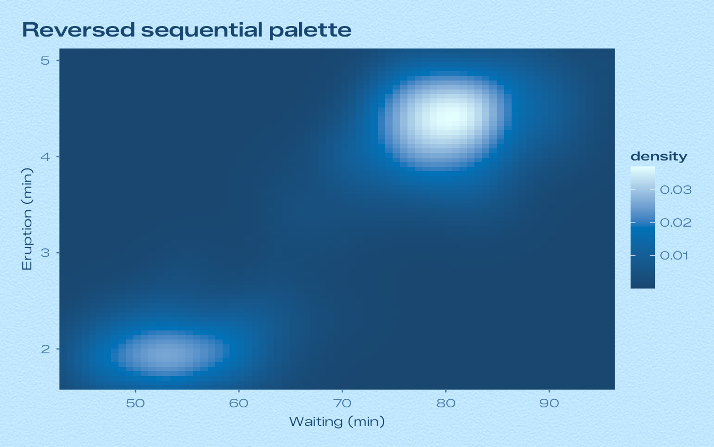
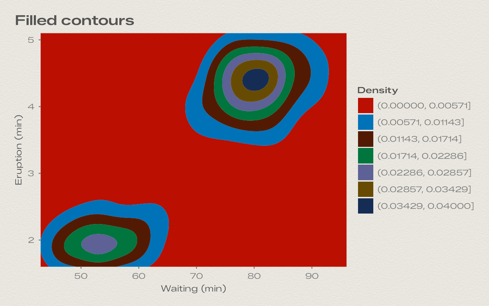
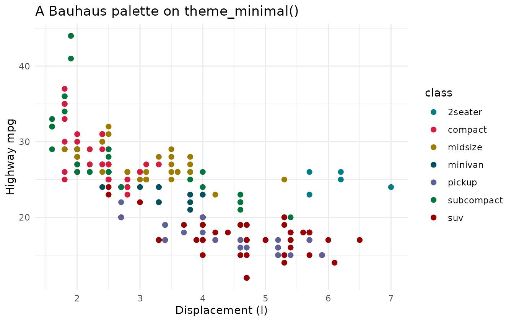
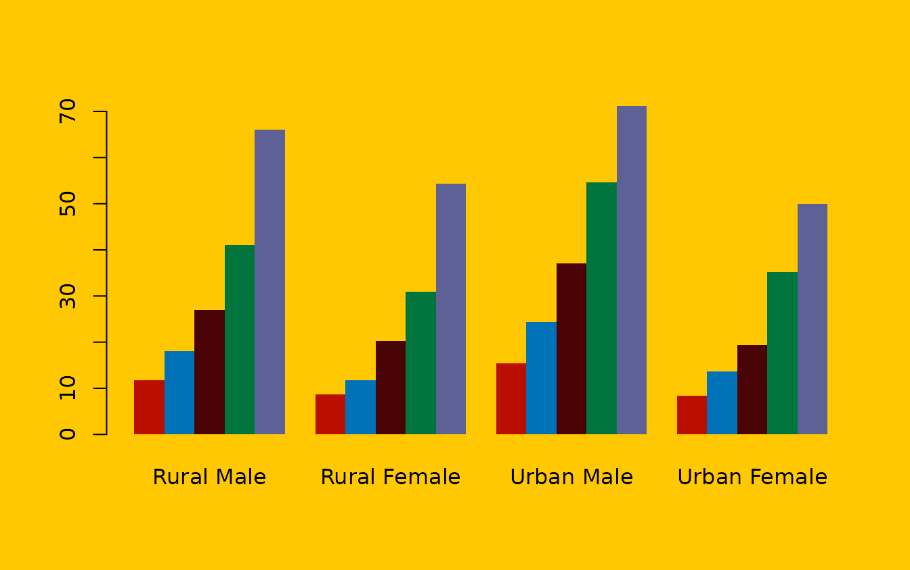

Where the colours come from
Each dial of the screensaver is a small colour system. Its colours
were measured from the dial artwork and are stored in
bauhaus_dials:
- paper and plate: the plate as shown on screen (lifted by 13/255) and its nominal colour.
- numeral: the hour numerals.
- track: the minute track and the minute numerals.
- steel, hand and hub: the polished steel of the indices, hands and hub.
- lume and lume_hand: the luminous paint in the indices and hands, by daylight.
- shadow_core, shadow_ambient and shadow_contact: the tinted shadows under the hands and indices. On coloured dials these are deep, saturated versions of the plate.
The palettes are built from these:
- The discrete palette has eight colours. It opens with the dial’s own signature colour and ink, then borrows accents from the other dials (their plates, inks and shadow tints), chosen to stand out against this dial’s plate. Apart from the dial’s own inks on the two mid-tone plates, Signal Blue and Tennis, the first six colours of every palette reach a contrast ratio of at least 3:1 against the paper.
- The sequential palette is a ramp of the dial’s own colours. On light dials it runs from the daylight lume through the signature colour to the numeral ink; on dark dials it rises from just above the plate through the track ink to the numeral ink.
The colours of each dial
| Dial | paper | numeral | track | steel | lume | shadow_core | Discrete palette |
|---|---|---|---|---|---|---|---|
White“white”
|
#FFFFFF
|
#303334
|
#292B2B
|
#D7DBDD
|
#E7FCFA
|
#59676E
|
|
Turquoise“turquoise”
|
#AFF2F1
|
#004F5D
|
#007C84
|
#CBD2D6
|
#E4FEFF
|
#009F9D
|
|
Glacier“glacier”
|
#B1C5CD
|
#1B3A49
|
#2E5B73
|
#D0DADC
|
#F4FFFB
|
#31586A
|
|
Ocean“ocean”
|
#152D55
|
#D4FFF0
|
#6AF4D9
|
#C8C7D0
|
#D4FFEF
|
#00041C
|
|
Tennis“tennis”
|
#00824B
|
#A7FF01
|
#45FFBB
|
#D0DED5
|
#F6FFAA
|
#006400
|
|
Signal Blue“signal_blue”
|
#00AFEC
|
#FFFFFF
|
#9FFFFF
|
#C3CCCE
|
#A7FFFF
|
#003C65
|
|
Salmon“salmon”
|
#F9BB97
|
#531A03
|
#4C1200
|
#EAE6E6
|
#F6FFE9
|
#970000
|
|
Yellow“yellow”
|
#FFC800
|
#4A0305
|
#6E2C00
|
#DDD9D7
|
#EDFFE6
|
#970000
|
|
Beige“beige”
|
#F1DAA6
|
#4F3513
|
#856641
|
#E4E1DF
|
#ECFCFC
|
#9B7C00
|
|
Pistachio“pistachio”
|
#C0D2AD
|
#233B13
|
#364F2F
|
#E0E2DE
|
#EEFDF5
|
#365D37
|
|
Lavender“lavender”
|
#CFD6F5
|
#364379
|
#6570A6
|
#E2E3E8
|
#EEFCFC
|
#5D6195
|
|
Rose“rose”
|
#F9CCD8
|
#68353C
|
#AF566C
|
#E5E2E1
|
#FCEBED
|
#B20021
|
|
Sky Blue“sky_blue”
|
#C0E7FF
|
#194770
|
#4D7EAE
|
#CDD8DC
|
#E4FFFF
|
#0072B8
|
|
Cream“cream”
|
#E8E6DF
|
#545351
|
#B8B8B5
|
#DADBD6
|
#FAFAF2
|
#8F5F44
|
|
Slate“slate”
|
#535457
|
#F4FBFF
|
#7E8186
|
#BAB6B8
|
#F6FCFE
|
#0D0D0D
|
|
Noir“noir”
|
#1B1B1C
|
#E0E0DC
|
#9A9DA1
|
#C8C8C6
|
#DFDFDF
|
#000000
|
Get any of them in R:
bauhaus_colours("signal_blue")
#> paper plate numeral track steel
#> "#00AFEC" "#00A2DF" "#FFFFFF" "#9FFFFF" "#C3CCCE"
#> hand lume lume_hand hub shadow_core
#> "#C6CED1" "#A7FFFF" "#A1FEFB" "#B9C2C3" "#003C65"
#> shadow_ambient shadow_contact
#> "#1D547E" "#00133C"
bauhaus_palette("signal_blue")
#> [1] "#FFFFFF" "#00133C" "#FFC800" "#970000" "#9FFFFF" "#003700" "#4F3513"
#> [8] "#68353C"
bauhaus_palette("signal_blue", type = "sequential", n = 5)
#> [1] "#38CBF3" "#74E5F9" "#9FFFFF" "#D3FFFF" "#FFFFFF"Using the palettes
Inside a Bauhaus theme the dial’s palettes are already the defaults. Scales let you use another dial’s palette, reverse it, or bin it:
ggplot(faithfuld, aes(waiting, eruptions, fill = density)) +
geom_raster() +
scale_fill_bauhaus_c("sky_blue", reverse = TRUE) +
coord_cartesian(expand = FALSE) +
labs(title = "Reversed sequential palette", x = "Waiting (min)", y = "Eruption (min)") +
theme_bauhaus("sky_blue")
ggplot(faithfuld, aes(waiting, eruptions, z = density)) +
geom_contour_filled(bins = 7) +
scale_fill_bauhaus_d("salmon") +
coord_cartesian(expand = FALSE) +
labs(title = "Filled contours", x = "Waiting (min)", y = "Eruption (min)", fill = "Density") +
theme_bauhaus("cream")
They work with other themes as well:
ggplot(mpg, aes(displ, hwy, colour = class)) +
geom_point(size = 2) +
scale_colour_bauhaus_d("turquoise") +
labs(title = "A Bauhaus palette on theme_minimal()", x = "Displacement (l)", y = "Highway mpg") +
theme_minimal()
The discrete palettes stop at eight colours, because more categories than that are hard to tell apart. With more groups, ggplot2 warns and leaves the extra ones grey; consider lumping the smallest groups together.
For base graphics, use the colour vectors directly:
op <- par(bg = bauhaus_colours("yellow")[["paper"]], family = "sans")
barplot(VADeaths, beside = TRUE, col = bauhaus_palette("yellow", n = 5), border = NA)
par(op)